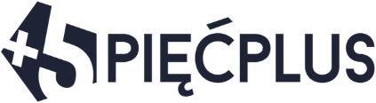
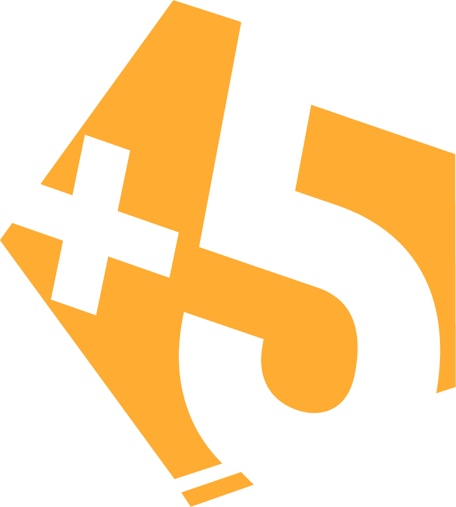
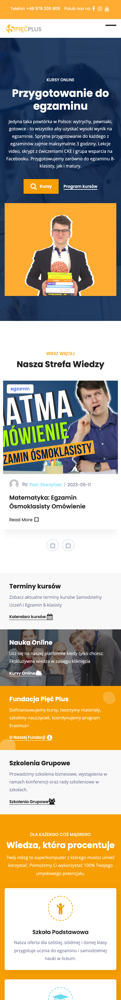
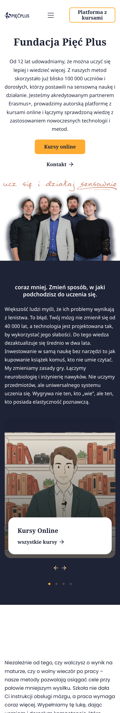
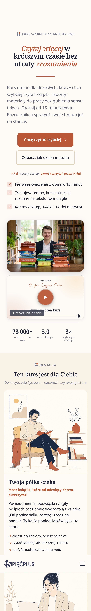
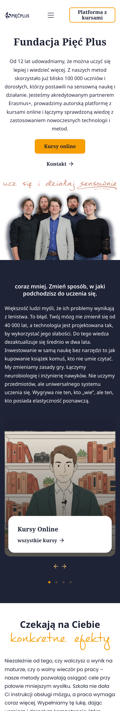
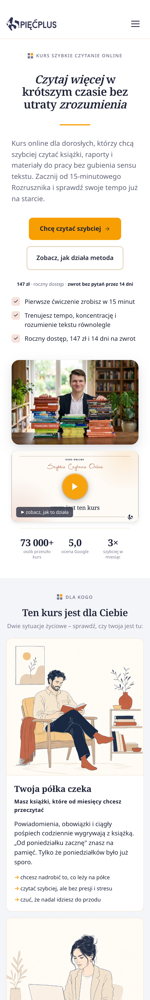
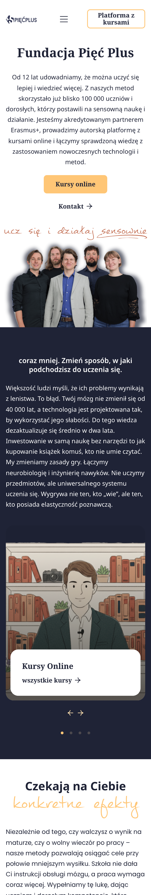
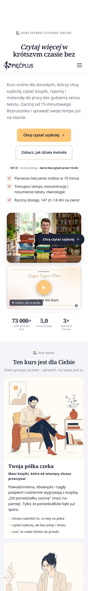
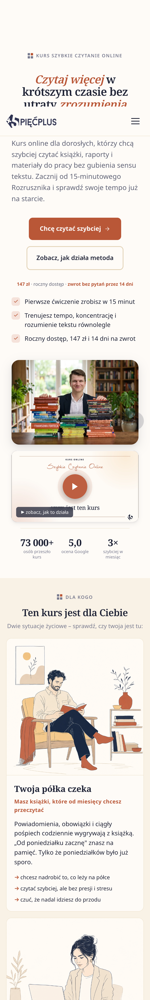

Logo

granat na bieli

pomarańcz na granacie
Źródła: strona 5plus.edu.pl z VI 2024 (Web Archive): #FEAC32 i #F79E02 na białym tle; stary landing z Leadpages: granat #1F2336 i #FFC676. Teraz: styl obecnej strony bez zmian, tło białe (zamiast kremu), pasy w chłodnym jasnym #F4F5F9, małe teksty w granacie. Ilustracje zostają, jak są.










